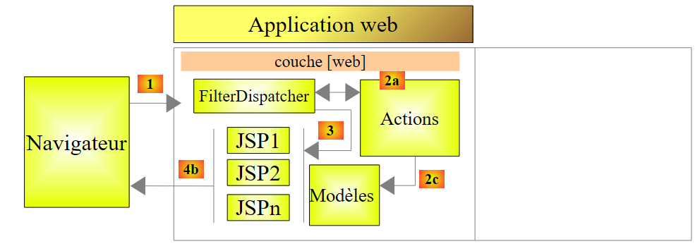

2. Un primer ejemplo
La mayoría de nuestros ejemplos se limitarán únicamente a la capa web implementada con Struts 2:
 |
Una vez que hayamos adquirido los conceptos básicos, estudiaremos un ejemplo más complejo con una arquitectura de múltiples capas.
2.1. Generación del ejemplo
Construimos nuestra primera aplicación.
 |
- En [1], creamos un nuevo proyecto
- en [2], elegimos el tipo Java Web / Aplicación web
- en [3], le damos un nombre al proyecto
- en [4], indicamos la ubicación del proyecto.
- En [5], se establece el nuevo proyecto como el proyecto principal.
 |
- En [6], se elige el servidor Tomcat. Al instalar NetBeans 7.01, se instalaron dos servidores: Apache Tomcat y GlassFish 3.1.
- En [7], indicamos que vamos a trabajar con el marco de trabajo Struts 2. Es la instalación del complemento para Struts 2 la que nos brinda esta posibilidad. Sin el complemento, no se nos ofrece el marco de trabajo Struts 2.
- En [8], se solicita la creación del proyecto de ejemplo que vamos a estudiar.
- En [9], podemos verificar qué bibliotecas de Struts 2 se utilizarán.
 |
- En [10], el proyecto generado. Volveremos a él más adelante.
- En [11], las bibliotecas del proyecto. Han sido integradas por el complemento de Struts 2. Si no contamos con el complemento, podremos encontrar estas bibliotecas en la carpeta [lib] de la distribución de Struts 2 descargada. En ese caso, seguiremos los pasos 12 y 13.
2.2. El proyecto generado en el sistema de archivos
 |
- en [1], la pestaña [Projects] presenta una vista de «desarrollador» del proyecto
- en [2], la pestaña [Files] muestra la carpeta del proyecto en el sistema de archivos
- en [2A], la rama [Web Pages] se representa en [2] mediante la carpeta [web] [2B]
- en [3A], la rama [Source Packages] se representa en [2] mediante la carpeta [java] [3B]
2.3. El archivo de configuración [META-INF/context.xml]
 |
Este archivo es el siguiente:
<?xml version="1.0" encoding="UTF-8"?>
<Context antiJARLocking="true" path="/exemple-01"/>
La línea 2 indica que el contexto de la aplicación web es /exemple-01. Todos los URL del tipo [http://machine:port/exemple-01/...] serán procesados por esta aplicación. Este contexto se puede encontrar en las propiedades del proyecto [2]: clic derecho en el proyecto / Propiedades / Ejecutar.
2.4. El archivo de configuración [WEB-INF/web.xml]
 |
Cada aplicación web se configura mediante el archivo [web.xml], ubicado en la carpeta [WEB-INF] de la aplicación. El archivo generado es el siguiente:
<?xml version="1.0" encoding="UTF-8"?>
<web-app version="3.0" xmlns="http://java.sun.com/xml/ns/javaee" xmlns:xsi="http://www.w3.org/2001/XMLSchema-instance" xsi:schemaLocation="http://java.sun.com/xml/ns/javaee http://java.sun.com/xml/ns/javaee/web-app_3_0.xsd">
<filter>
<filter-name>struts2</filter-name>
<filter-class>org.apache.struts2.dispatcher.FilterDispatcher</filter-class>
</filter>
<filter-mapping>
<filter-name>struts2</filter-name>
<URL-pattern>/*</URL-pattern>
</filter-mapping>
<session-config>
<session-timeout>
30
</session-timeout>
</session-config>
<welcome-file-list>
<welcome-file>example/HelloWorld.JSP</welcome-file>
</welcome-file-list>
</web-app>
- Las líneas 3 a 6 definen un filtro implementado por la clase [org.apache.struts2.dispatcher.FilterDispatcher] de Struts 2. Esta clase desempeñará el papel del controlador C del modelo MVC.
- Líneas 7-10: definen una asociación entre un modelo URL y el filtro que debe procesar los URL que siguen este modelo. Aquí se indica que todo URL (modelo /*) debe ser procesado por el filtro denominado struts2. Este es el filtro definido en las líneas 3-6. Por lo tanto, aquí todos los URL pasarán por el controlador de Struts 2.
- Líneas 11-15: definen la duración de una sesión de usuario, en este caso 30 minutos. Durante las distintas solicitudes, se realiza un seguimiento del usuario mediante un token de sesión que se le asignó en su primera solicitud y que luego envía sistemáticamente con cada nueva solicitud. Esto permite que el servidor web lo reconozca y administre una «memoria» para el usuario, lo que se conoce como sesión. Si transcurren más de 30 minutos entre dos solicitudes, se genera un nuevo token de sesión para el usuario, quien pierde así su «memoria» y comienza una nueva.
- Líneas 16-18: definen el archivo que se mostrará cuando el usuario acceda a la aplicación web sin solicitar un documento. Así, cuando el URL solicitado sea [http://machine:port/exemple-01], el URL que se entregará será [http://machine:port/exemple-01/example/HelloWord.JSP].
2.5. El archivo de configuración [struts.xml]
 |
El archivo [struts.xml] es el archivo de configuración de Struts 2. Puede estar en cualquier lugar dentro del directorio ClassPath del proyecto. En el proyecto de NetBeans anterior, el directorio ClassPath del proyecto está formado por dos ramas:
- Paquetes de código fuente
- Bibliotecas
Por lo tanto, cualquier carpeta o biblioteca ubicada en estas dos ramas forma parte del ClassPath del proyecto. Es habitual colocar el [struts.xml] en <paquete predeterminado>. Aquí, su contenido es el siguiente:
<!DOCTYPE struts PUBLIC
"-//Apache Software Foundation//DTD Struts Configuration 2.0//EN"
"http://struts.apache.org/dtds/struts-2.0.dtd">
<struts>
<include file="example.xml"/>
<!-- Configuración para el paquete predeterminado. -->
<package name="default" extends="struts-default">
</package>
</struts>
- líneas 5 y 10: la etiqueta raíz del documento es la etiqueta <struts>
- línea 6: el archivo [example.xml] se inserta aquí. Por lo tanto, trae su propia configuración. Volveremos a esto más adelante.
- líneas 8-9: definen un paquete denominado aquí «default». Un paquete permite configurar un grupo de acciones de Struts 2 que comparten el mismo URL. Por ejemplo, [/chemin/Action1] y [/chemin/Action2]. Entonces, podemos definir un paquete para estas acciones:
<package name="employes" namespace="/employes" extends="struts-default">
... configuration
</package>
El paquete anterior se llama «empleados» y configura las acciones de URL y /employes/Action. El paquete puede heredar de otro paquete con la palabra clave «extends». En el ejemplo anterior, el paquete employes hereda del paquete struts-default. Este paquete se encuentra en el archivo [struts-default.xml] de la biblioteca struts2-core.jar:
 |
El paquete «struts-default», definido en el archivo [struts-default.xml], configura diversos elementos, entre ellos una lista de interceptores que se ejecutan al llamar a una acción. Volvamos a la estructura MVC de una aplicación Struts 2:
 |
Para procesar una URL de la forma [http://machine:port/.../Action], el controlador [FilterDispatcher] instanciará la clase que implementa la acción solicitada y ejecutará uno de sus métodos; por defecto, un método llamado execute. La llamada a este método execute pasará por una serie de interceptores:
 |
Tanto los interceptores como la acción procesan la misma solicitud. La lista de interceptores definida en el paquete struts-default es suficiente en la mayoría de los casos. Por lo tanto, nuestros paquetes de Struts siempre extenderán el paquete struts-default. Para saber qué hacen los diferentes interceptores, consulte el capítulo 4 de [ref2].
Volvamos al archivo de configuración struts.xml:
<!DOCTYPE struts PUBLIC
"-//Apache Software Foundation//DTD Struts Configuration 2.0//EN"
"http://struts.apache.org/dtds/struts-2.0.dtd">
<struts>
<include file="example.xml"/>
<!-- Configuración para el paquete predeterminado. -->
<package name="default" extends="struts-default">
</package>
</struts>
- línea 8: el paquete denominado default tiene una función especial. Se encarga de las acciones que no se han configurado en los demás paquetes. Aquí, en las líneas 8 y 9, no hay ninguna configuración para el paquete default. Por lo tanto, se podría eliminar la definición de este paquete.
Veamos ahora el archivo [example.xml] incluido en la línea 6 del archivo [struts.xml]:
<?xml version="1.0" encoding="UTF-8" ?>
<!DOCTYPE struts PUBLIC
"-//Apache Software Foundation//DTD Struts Configuration 2.0//EN"
"http://struts.apache.org/dtds/struts-2.0.dtd">
<struts>
<package name="example" namespace="/example" extends="struts-default">
<action name="HelloWorld" class="example.HelloWorld">
<result>/example/HelloWorld.JSP</result>
</action>
</package>
</struts>
- línea 8: define un paquete llamado example que extiende el paquete struts-default. Este paquete administra los URL del tipo /example/Action (espacio de nombres /example).
- líneas 9-11: definen una acción denominada HelloWorld (atributo name) que, por lo tanto, corresponde a URL /example/Helloworld. Esta acción es procesada por una instancia de la clase example.HelloWorld (atributo class).
- El controlador [FilterDispatcher] ejecutará el método execute de esta clase.
- Este método devolverá una cadena de caracteres denominada «clave de navegación».
- Las diferentes claves de navegación deben definirse mediante etiquetas <result name="clave"/> (línea 10). Si no existe el atributo name, se utiliza por defecto la clave success. Este es el caso anterior. Por lo tanto, el método execute de la clase example.HelloWorld debe devolver al controlador [FilterDispatcher] la clave success.
- El controlador [FilterDispatcher], a su vez, muestra la página [/example/HelloWorld.JSP] (línea 10).
Si fusionamos los dos archivos [struts.xml] y [example.xml], eliminemos el paquete default, que parece innecesario, todo ocurre como si tuviéramos el archivo [struts.xml] reducido únicamente al archivo [example.xml].
2.6. La acción HelloWorld
 |
Según el archivo [struts.xml] analizado, la acción HelloWorld se activa cuando el archivo URL solicitado por el cliente es /example/HelloWorld. A continuación, se ejecuta su método execute. Este debe devolver una clave de navegación. Hemos visto que solo había una: success, y que, en ese caso, se enviaba la página /example/HelloWorld.JSP como respuesta al usuario.
El código de la acción HelloWorld es el siguiente:
- línea 5: la clase HelloWorld deriva de la clase ActionSupport de Struts 2. Esto ocurre prácticamente siempre. Esto permite aprovechar ciertos métodos, como el método getText de la línea 8.
- líneas 7-10: el método execute, que se ejecuta al invocar el controlador de Struts. Sabemos que debe devolver una cadena de caracteres, de ahí su firma en la línea 7. Aquí devolverá la constante SUCCESS, definida también en ActionSupport. De esta manera, se definen otras constantes para el resultado del método execute:
SUCCESS | "success" |
ERROR | "error" |
INPUT | "input" |
LOGIN | "login" |
Así que aquí, el método execute devuelve la cadena success. Si nos referimos al archivo [struts.xml], entonces será la página /example/HelloWorld.JSP la que se le mostrará al usuario como respuesta.
- Línea 8: el método execute inicializa el campo message de la línea 14 con el valor de getText(" HelloWorld.message "). El método getText pertenece a la clase padre ActionSupport. Permite recuperar un texto de un archivo según el idioma utilizado. Por defecto, se utilizará aquí el archivo package.properties ubicado en el mismo paquete que la acción. Este archivo viene en dos versiones:
El archivo [package.properties] es el siguiente:
Es una secuencia de líneas de texto con el formato clé=valeur. Si se utiliza este archivo, getText("HelloWorld.message") tendrá como valor «Struts is up and running ...»
El archivo [package_es.properties] es el siguiente:
Si el idioma utilizado por el navegador del cliente es el español (atributo «es», en package_es.properties), getText («HelloWorld.message») tendrá como valor ¡Struts está bien! ... En todos los demás casos, se utilizará el archivo [package.properties].
2.7. La vista HelloWorld.JSP
 |
Este es el último elemento del rompecabezas de Struts. Es la vista que se muestra cuando se solicita el archivo URL /example/HelloWorld. Ya hemos visto el laberinto por el que pasa la solicitud inicial para finalmente mostrar esta respuesta. El código de la página es el siguiente:
<%@ page contentType="text/html; charset=UTF-8" %>
<%@ taglib prefix="s" uri="/struts-tags" %>
<html>
<head>
<title><s:text name="HelloWorld.message"/></title>
</head>
<body>
<h2><s:property value="message"/></h2>
<h3>Languages</h3>
<ul>
<li>
<s:url id="URL" action="HelloWorld">
<s:param name="request_locale">en</s:param>
</s:url>
<s:a href="%{URL}">English</s:a>
</li>
<li>
<s:url id="URL" action="HelloWorld">
<s:param name="request_locale">es</s:param>
</s:url>
<s:a href="%{URL}">Espanol</s:a>
</li>
</ul>
</body>
</html>
- La página utiliza etiquetas HTML (líneas 5, 6, ...) y etiquetas de una biblioteca definida en la línea 3. Todas las etiquetas <s:xx> pertenecen a esta biblioteca.
- Línea 7: la etiqueta <s:text> permite mostrar un texto diferente según el idioma del navegador del cliente. El atributo name indica la clave que se debe buscar en los archivos de mensajes. Aquí, también, se utilizarán los archivos package_xx.properties. Recordemos que estos contienen únicamente un mensaje con la clave HelloWorld.message.
- línea 11: la etiqueta <s:property name="propiedad"> permite escribir el valor de una propiedad de un objeto llamado ActionContext. En este objeto se encuentran:
- las propiedades de la acción que se ha ejecutado. name="message" mostrará el valor del campo «message» de la acción actual. Los métodos get y set asociados al campo son los que se utilizan para obtener su valor o inicializarlo. Por lo tanto, estos métodos deben existir.
- los atributos de la solicitud actual indicados como <s:property name="#request['clé']">
- los atributos de la sesión del usuario, indicados como <s:property name="#session['clé']">
- los atributos de la propia aplicación, indicados como <s:property name="#application['clé']">
- los parámetros enviados por el navegador del cliente, indicados como <s:property name="#parameters['clé']">
- la notación <s:property name="#attr['clé']"> muestra el valor de un objeto buscado en la página, la consulta, la sesión y la aplicación, en ese orden.
- líneas 16-18: la etiqueta <s:url> sirve para definir una URL. El atributo id le da un nombre a la URL que se va a crear. Este nombre se utiliza posteriormente en la línea 19. El atributo action indica a qué acción debe apuntar la URL.
- línea 17: la etiqueta <s:param ..> permite agregar parámetros a la URL en el formato ?param1=valeur1¶m2=valeur2&.... Aquí, el parámetro agregado será ?request_locale=es.
Al final, el archivo URL generado será el siguiente:
Para entender este URL, hay que recordar que la página [HelloWorld.JSP] se muestra en dos casos:
- (continuación)
- a petición directa del URL [/exemple-01/example/HelloWorld.JSP]
- a petición de la acción [/exemple-01/example/HelloWorld.action]
En ambos casos, la ruta de URL es /exemple-01/example.. La etiqueta <s:url action= "... "> agrega la acción definida por el atributo action a esta ruta. De esta manera se obtiene /ejemplo-01/ejemplo/HelloWorld. Luego agrega el sufijo .action al URL anterior, así como los parámetros del URL, si los hay. El archivo URL resultante /ejemplo-01/ejemplo/HelloWorld.action?request_locale=en llamará a la acción HelloWorld definida en el archivo [struts.xml], al tiempo que pasa el parámetro request_locale=en. Este último no será procesado por la acción HelloWorld, sino por uno de los interceptores de Struts, el que se encarga de la internacionalización de las páginas. El parámetro request_locale será reconocido y procesado. El idioma de las páginas pasará a ser el inglés (en).
- línea 19: define un enlace HTML. El atributo href de la etiqueta <a> espera una cadena de caracteres. Aquí queremos usar el valor de URL, definido en la línea 16 y con el id URL. Para ello, se escribe href="%{URL}". La variable URL se evalúa y su valor se asigna al atributo href. En la mayoría de los casos, la evaluación de las variables es implícita. Por ejemplo, cuando se escribe
se muestra el valor de la propiedad message y no la cadena " message ". Sin embargo, en otros casos, es necesario forzar la evaluación de las variables o propiedades. Si hubiéramos escrito href="URL", se habría asignado la cadena URL al atributo href.
- Líneas 23-27: crean un enlace HTML para cambiar el idioma de las páginas a español.
2.8. Ejecución de la aplicación
Iniciamos la ejecución del proyecto:
 |
- En [1], se inicia la ejecución del proyecto [exemple-01]. El servidor web Tomcat se inicia automáticamente si aún no lo estaba. Se solicita URL [/exemple-01] [3]. A continuación, se utiliza el archivo [web.xml]:
<?xml version="1.0" encoding="UTF-8"?>
<web-app version="3.0" xmlns="http://java.sun.com/xml/ns/javaee" xmlns:xsi="http://www.w3.org/2001/XMLSchema-instance" xsi:schemaLocation="http://java.sun.com/xml/ns/javaee http://java.sun.com/xml/ns/javaee/web-app_3_0.xsd">
<filter>
<filter-name>struts2</filter-name>
<filter-class>org.apache.struts2.dispatcher.FilterDispatcher</filter-class>
</filter>
<filter-mapping>
<filter-name>struts2</filter-name>
<URL-pattern>/*</URL-pattern>
</filter-mapping>
<session-config>
<session-timeout>
30
</session-timeout>
</session-config>
<welcome-file-list>
<welcome-file>example/HelloWorld.JSP</welcome-file>
</welcome-file-list>
</web-app>
- porque en el archivo solicitado URL [/exemple-01] no se especifica ninguna página, por lo que Tomcat utilizará la etiqueta <welcome_file-list> de las líneas 16 y 18. Por lo tanto, se mostrará la página URL /ejemplo-01/ejemplo/HelloWorld.JSP.
- Dado que Struts 2 procesa todas las URL (líneas 8 y 9), esta URL será filtrada por Struts. Como no corresponde a una acción, sino a una página JSP, esta última se mostrará.
- Lo que vemos en [2] es, por lo tanto, la página HelloWorld.JSP que hemos estudiado.
- En [4], vemos que la etiqueta <title><s:text name="HelloWorld.message"/></title> no ha surtido efecto, ni tampoco la etiqueta <h2><s:property value="message"/></h2>. La razón es que no se ha llamado a ninguna acción. Por lo tanto, no se ejecutó la lista de interceptores que se ejecutan antes de la acción, en particular el que gestiona la internacionalización. La etiqueta de internacionalización <s:text ...> no se pudo procesar correctamente. Además, la propiedad message que hace referencia al campo «message» de la clase Action1 no existe. De ahí que no se muestre nada.
Ahora, sigamos el enlace [English]. Obtenemos la siguiente página:
 |
- en [1], la URL solicitada. Ya hemos explicado cómo se forma este URL. En esta ocasión se solicita una acción de Struts: la acción HelloWorld definida en [example.xml].
<struts>
<package name="example" namespace="/example" extends="struts-default">
<action name="HelloWorld" class="example.HelloWorld">
<result>/example/HelloWorld.JSP</result>
</action>
</package>
</struts>
- Se ejecutó el método execute de esta acción. Hemos visto que devolvía la clave success. De la línea 4 anterior, se deduce que la página /example/HelloWorld.JSP se devuelve como respuesta al cliente. Esto es lo que vemos en [3].
- En [1], vemos que la página URL solicitada se configura mediante el parámetro request_locale=en. A partir de ahora, el idioma de las páginas será el inglés. De hecho, esta elección de idioma se almacena en la sesión del usuario, quien conservará esta elección hasta que la cambie.
- En [2] y [3], se puede observar la internacionalización en acción. Las etiquetas <title><s:text name="HelloWorld.message"/></title> y <h2><s:property value="message"/></h2> han surtido efecto en esta ocasión.
Si ahora seleccionamos el enlace [Espanol], obtenemos la página en español:
 |
2.9. Conclusion
Hemos analizado un ejemplo generado automáticamente por el complemento Struts 2 para NetBeans. Hemos observado que resulta bastante difícil seguir el procesamiento de una solicitud. Intervienen los siguientes elementos:
- la configuración [web.xml], [struts.xml]
- la acción ejecutada: interceptores y método execute.
Al principio, el funcionamiento de Struts 2 puede parecer complejo. Se necesita un poco de tiempo para acostumbrarse. A continuación, presentaremos una serie de ejemplos que aclaran cada uno un aspecto específico de Struts.